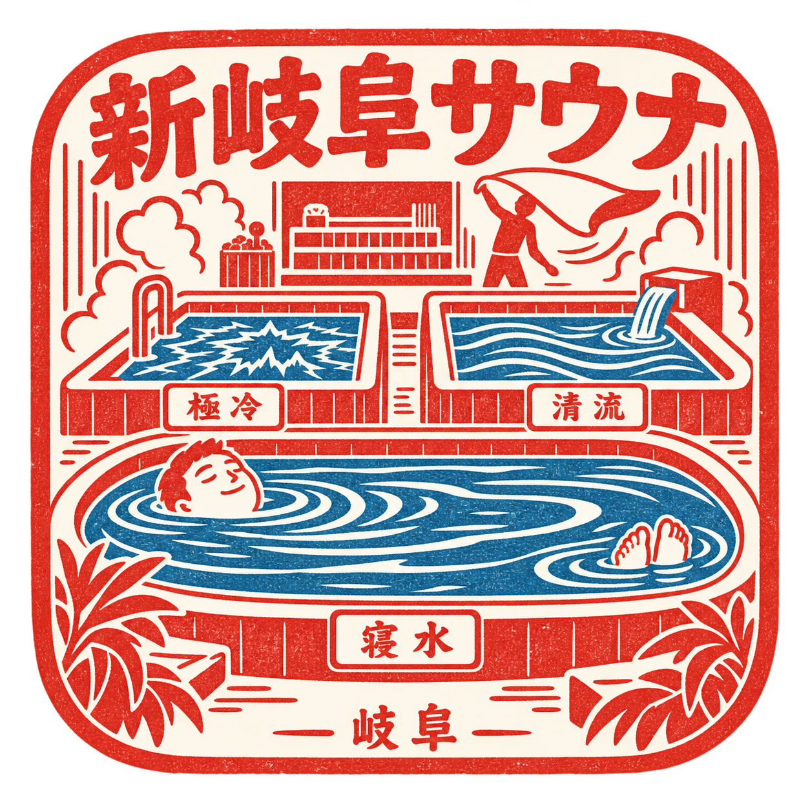
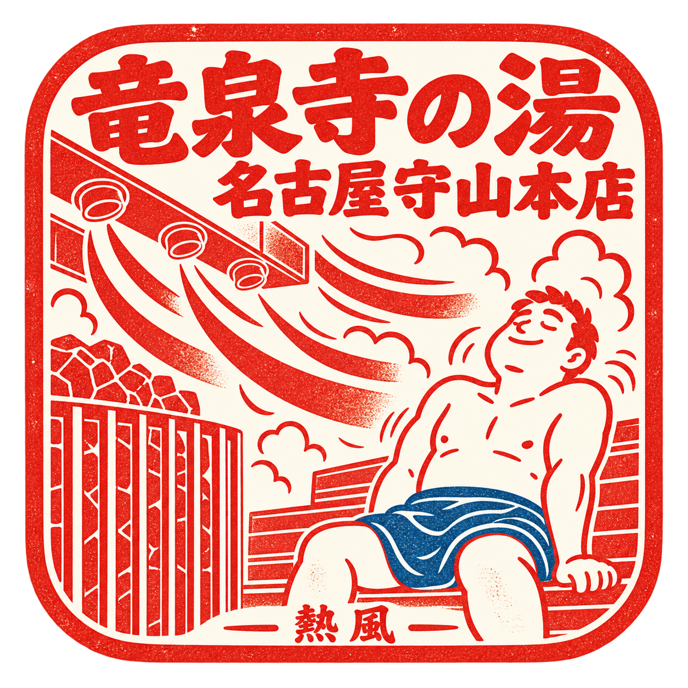
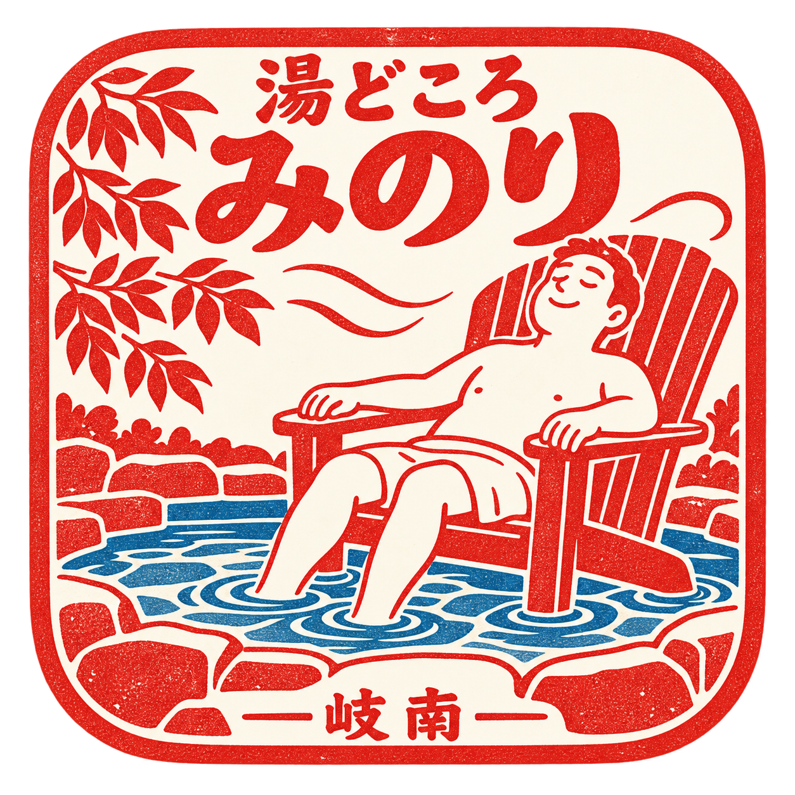

棚 / 156 × 156px

新岐阜サウナ / g4
承認済み基準・変更なし

竜泉寺の湯 名古屋守山本店 / a9
熱・追加試作

湯どころ みのり / g6
休・追加試作
帳 / 296 × 296px
非訪問日にも、最新の一印を眺める想定
冷 / 水面を大きく、顔と足だけを浮かべる
熱 / 斜めの気流と肩の姿勢で熱風を描く
休 / 椅子へ体を預け、足湯に足を置く
押印完了 / 296 × 296px
押印直後の主役は絵。星や点数を絵の中へ入れない
新岐阜サウナ
竜泉寺の湯 名古屋守山本店
湯どころ みのり